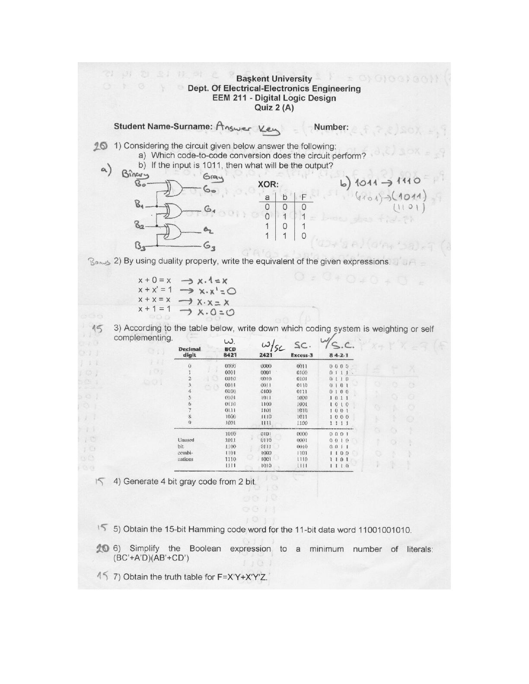
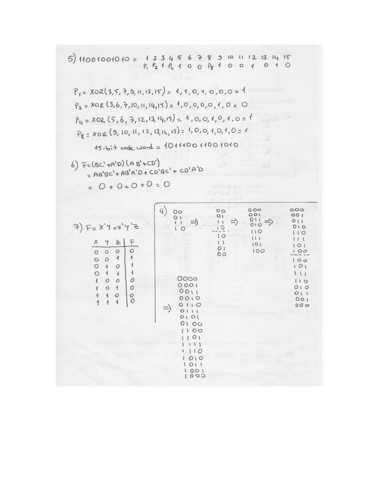
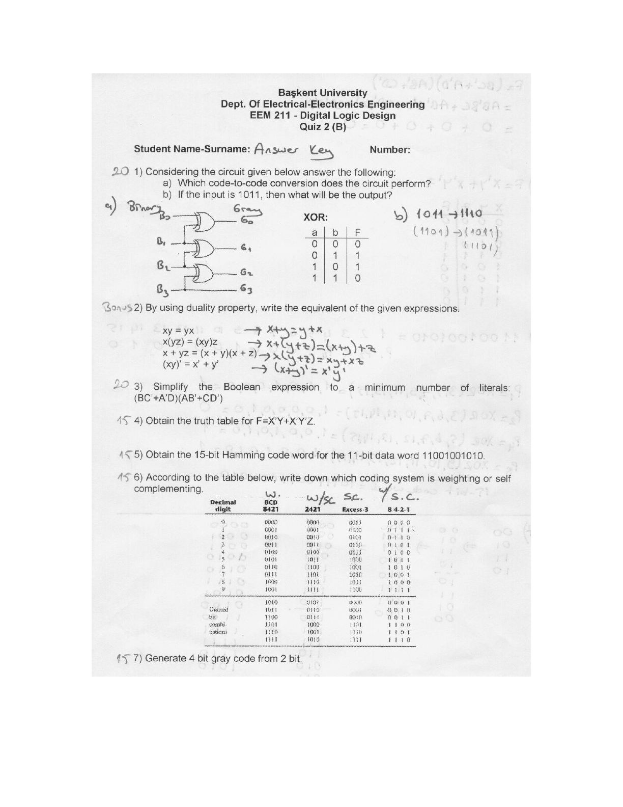
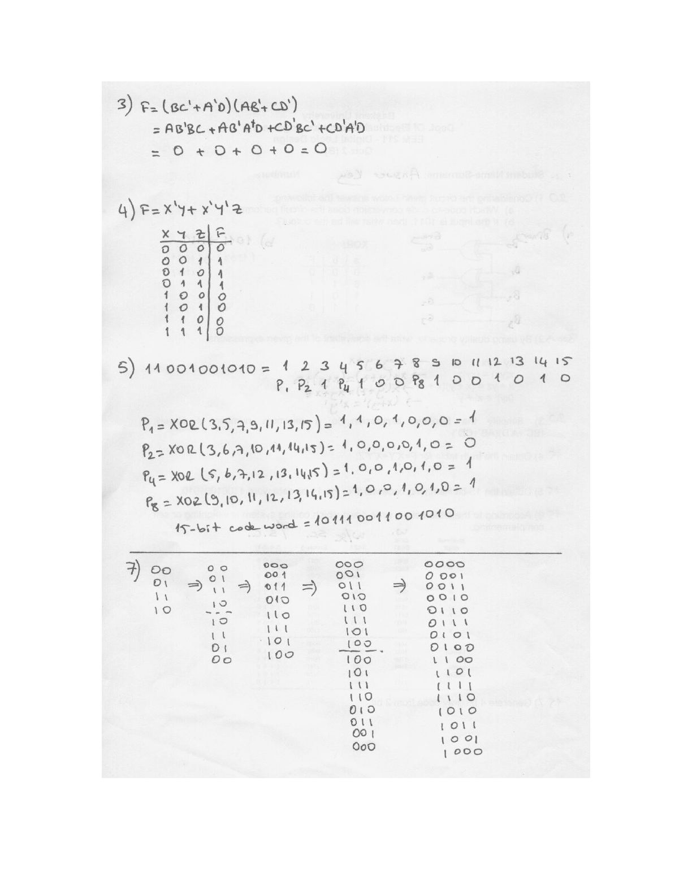

· EEM211
EEM211 Sayısal Mantık Tasarımı: Quiz 2 Cevap Anahtarı (2006)
EEM211 – Sayısal Mantık Tasarımı · 20.10.2006 · 16.10.2026
Bu yazı, Başkent Üniversitesi EEM 211 Digital Logic Design (Sayısal Mantık Tasarımı) dersinin Ekim 2006'da yapılan Quiz 2 sınavının cevap anahtarıdır. A ve B grubunun soruları aynı, yalnızca sıraları ve ikilik (duality) sorusundaki ifadeler farklı. Sorular basılı, çözümler el yazısı; dosya bilgisinde hazırlayan olarak Evren Ferhat Emekdaş yazıyor. Konular: kod çevirme, Gray kodu, Hamming kodu ve Boole cebri. Orijinal Word dosyası yazının sonunda indirilebilir.
Quiz 2 (A)

Soru 1: Kod çevirici devre (20 puan)
Considering the circuit given below answer the following: a) Which code-to-code conversion does the circuit perform? b) If the input is 1011, then what will be the output?
Devrede B3 doğrudan G3 çıkışına gidiyor; diğer çıkışlar komşu giriş bitlerinin XOR'u: G2 = B3 ⊕ B2, G1 = B2 ⊕ B1, G0 = B1 ⊕ B0. Kâğıtta XOR'un doğruluk tablosu da verilmiş:
| a | b | F |
|---|---|---|
| 0 | 0 | 0 |
| 0 | 1 | 1 |
| 1 | 0 | 1 |
| 1 | 1 | 0 |
- a) Devre ikiliden (binary) Gray koduna çevirme yapar.
- b) 1011 → 1110
Soru 2: İkilik özelliği (bonus)
By using duality property, write the equivalent of the given expressions.
| İfade | İkizi (dual) |
|---|---|
| x + 0 = x | x · 1 = x |
| x + x' = 1 | x · x' = 0 |
| x + x = x | x · x = x |
| x + 1 = 1 | x · 0 = 0 |
Soru 3: Ağırlıklı ve kendini tümleyen kodlar (15 puan)
According to the table below, write down which coding system is weighting or self complementing.
Soruda BCD 8421, 2421, Excess-3 ve 84-2-1 kodlarının tablosu (kullanılmayan bit birleşimleriyle birlikte) verilmiş. Cevap:
| Kod | Cevap |
|---|---|
| BCD 8421 | Ağırlıklı (W.) |
| 2421 | Ağırlıklı ve kendini tümleyen (W/SC) |
| Excess-3 | Kendini tümleyen (SC.) |
| 84-2-1 | Ağırlıklı ve kendini tümleyen (W/S.C.) |
Soru 4: 2 bitten 4 bitlik Gray kodu (15 puan)
Generate 4 bit gray code from 2 bit.
Çözümde kod, yansıtma yöntemiyle adım adım büyütülüyor: liste aynaya yansıtılıp ters sırayla altına yazılıyor, üst yarının başına 0, alt yarının başına 1 ekleniyor.
- 2 bit: 00, 01, 11, 10
- 3 bit: 000, 001, 011, 010, 110, 111, 101, 100
- 4 bit: 0000, 0001, 0011, 0010, 0110, 0111, 0101, 0100, 1100, 1101, 1111, 1110, 1010, 1011, 1001, 1000
Soru 5: 15 bitlik Hamming kodu (15 puan)
Obtain the 15-bit Hamming code word for the 11-bit data word 11001001010.
Eşlik bitleri 1, 2, 4 ve 8 numaralı konumlara, veri bitleri kalan konumlara yerleştirilir:
| Konum | 1 | 2 | 3 | 4 | 5 | 6 | 7 | 8 | 9 | 10 | 11 | 12 | 13 | 14 | 15 |
|---|---|---|---|---|---|---|---|---|---|---|---|---|---|---|---|
| Bit | P1 | P2 | 1 | P4 | 1 | 0 | 0 | P8 | 1 | 0 | 0 | 1 | 0 | 1 | 0 |
- P1 = XOR(3, 5, 7, 9, 11, 13, 15) = XOR(1, 1, 0, 1, 0, 0, 0) = 1
- P2 = XOR(3, 6, 7, 10, 11, 14, 15) = XOR(1, 0, 0, 0, 0, 1, 0) = 0
- P4 = XOR(5, 6, 7, 12, 13, 14, 15) = XOR(1, 0, 0, 1, 0, 1, 0) = 1
- P8 = XOR(9, 10, 11, 12, 13, 14, 15) = XOR(1, 0, 0, 1, 0, 1, 0) = 1
15 bitlik kod sözcüğü: 101110011001010
Soru 6: Boole sadeleştirme (20 puan)
Simplify the Boolean expression to a minimum number of literals: (BC'+A'D)(AB'+CD')
F = (BC' + A'D)(AB' + CD') = AB'BC' + AB'A'D + CD'BC' + CD'A'D = 0 + 0 + 0 + 0 = 0
Soru 7: Doğruluk tablosu (15 puan)
Obtain the truth table for F=X'Y+X'Y'Z.
| X | Y | Z | F |
|---|---|---|---|
| 0 | 0 | 0 | 0 |
| 0 | 0 | 1 | 1 |
| 0 | 1 | 0 | 1 |
| 0 | 1 | 1 | 1 |
| 1 | 0 | 0 | 0 |
| 1 | 0 | 1 | 0 |
| 1 | 1 | 0 | 0 |
| 1 | 1 | 1 | 0 |

Quiz 2 (B)
B grubunda aynı sorular farklı sırayla soruluyor: 1) Gray çevirici devre, 2) ikilik özelliği (bonus), 3) sadeleştirme, 4) doğruluk tablosu, 5) Hamming kodu, 6) kod tablosu, 7) 2 bitten 4 bitlik Gray kodu. Cevaplar A grubununkilerle aynı; yalnız ikilik sorusundaki ifadeler farklı:
| İfade | İkizi (dual) |
|---|---|
| xy = yx | x + y = y + x |
| x(yz) = (xy)z | x + (y + z) = (x + y) + z |
| x + yz = (x + y)(x + z) | x(y + z) = xy + xz |
| (xy)' = x' + y' | (x + y)' = x'y' |

